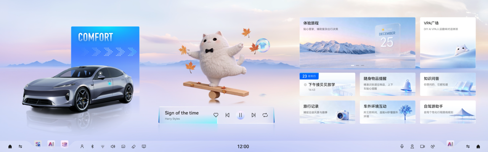
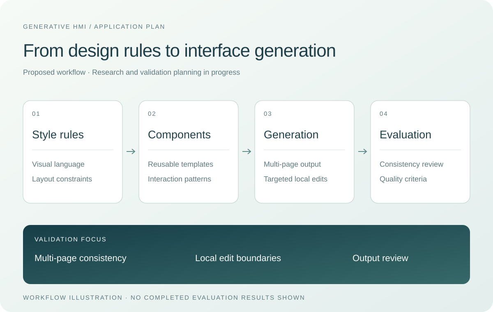

HMI 交互与交付
用户任务、信息架构、页面状态与异常流程，连接 UE 文档、UI 适配、评审走查和版本交付。
德赛西威工作实践 ↗LILIAN ZHOU 周琳
AUTOMOTIVE UX · AI EXPERIENCE
从用户场景、交互规则到原型验证，设计清晰、可理解的座舱与 AI 体验。

场景 · 信息层级 · 对话状态 · 交互反馈
SELECTED WORK / 01
以座舱交互为主线，连接 AI 产品、原型实现与汽车服务体验。
探索风格规则、组件模板与界面生成的协同流程，围绕多页一致性、局部修改和质量评价规划实施路径。
查看技术方案与研发重点 ↗
PRACTICE / 02
在交互设计、AI 原型验证与产品协作之间推进工作。
用户任务、信息架构、页面状态与异常流程，连接 UE 文档、UI 适配、评审走查和版本交付。
德赛西威工作实践 ↗使用 Claude Code、Codex、Cursor 拆解任务，将设计转为前端代码草稿和可测试实现，开展调试与状态验证。
ICERED 设计与验证 ↗主导应用方案与实施路径设计，梳理风格规则、组件模板、多页一致性、局部修改及质量评估标准。
查看研发专题 ↗需求拆解、优先级判断、版本管理与测试验收；与海外市场和技术团队用英文对齐范围、节奏和交付风险。
查看产品协作实践 ↗EXPERIENCE / 03
艺术科技背景，汽车与 AI 产品实践。
（个人简介）
你好，我是周琳。
我是一名智能座舱 HMI 交互设计师，毕业于英国皇家艺术学院信息体验设计专业。目前在德赛西威参与座舱交互、AI 座舱界面优化与生成式 HMI 研发方案设计。
我的工作从用户场景、任务流程和信息架构出发，延伸到状态与异常设计、UE 文档、界面适配和交付验证。此前在 ICERED 参与海外 AI 社交产品迭代，在蔚来参与车辆年检服务数字化。
我关注驾驶信息的优先级、系统反馈的可理解性，以及人与智能产品之间自然的交流。
（工作经历）
（教育背景）
EXPLORATIONS / 04
沉浸式体验、服务系统与数字产品中的持续探索。
LET’S CONNECT / 05
关注上海的智能座舱 HMI、汽车 UX 与 AI 体验设计机会。